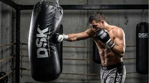
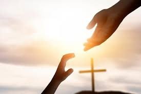

!Que tál!, mi nombre es Rubén Santiago Corona Moreno, soy estudiante de preparatoria y actualmente estoy cursando cuarto semestre de prepa, nací el 19 de enero del 2009, sí...adivinaste, tengo 17 años, una edad que ya suena seria y para mí es emocionante pero a la vez intrigante lo que vaya a pasar cuando ya cumpla los 18 años, pero por lo mientras yo cumplo con mis obligaciones y me esfuerzo en lo que me gusta demasiado, esto te lo cuento abajo

Primera cosa que me gusta: La música, no puedo hacer ninguna actividad sin ella, ya que realmente me relaja y es una parte creativa de mí, me inspiro mucho con cada melodía y me alegra en cierta parte los días, así que una de mis cosas favoritas debe ser.

Segunda cosa que me gusta: el box, es el deporte con el que más me he sentido a gusto hasta el momento, ya que disfruto de ello y en gran parte me alegra estar con mis amigos, cada vez que voy al box siempre termino más motivado y enérgico el día, se convirtió en gran parte de mi día a día y no pienso dejarlo, también he competido en torneos de boxeo no mucho tiempo atrás, unas veces me ha ido bien y otras no tanto, pero he ido ganando experiencia.

Tercera cosa que me gusta: Estudiar, aunque parezca raro estudiar es algo que siempre me ha dado calma y tranquilidad, el saber que estás aprendiendo algo nuevo y vas ganando experiencia, es algo que no tiene precio, claro, no todos los temas me gusta estudiar jajaja, pero algo que si se, es que me encanta la programación, sobre todo descubrir y aprender nuevas cosas acerca de ello, me enfoco en lo que quiero y poco a poco me voy adaptando en este ámbito.

La cosa más importante de mi vida: Dios y mi familia, siempre he amado mucho a mi familia y me gusta mucho pasar tiempo con ellos, daría lo que sea por siempre tenerlos a mi lado, también gracias a mi familia, en especial mi mamá, me he logrado acercar a Dios, he podido conversar con el frecuentemente y cada día que despierto y me voy a dormir me acuerdo de mi señor y se que el siempre me protegerá, entonces estas son las dos cosas más importantes que aprecio de mi vida y jamás me voy a olvidar de ellas.
Visita este sitio para encontrar mis páginas favoritas